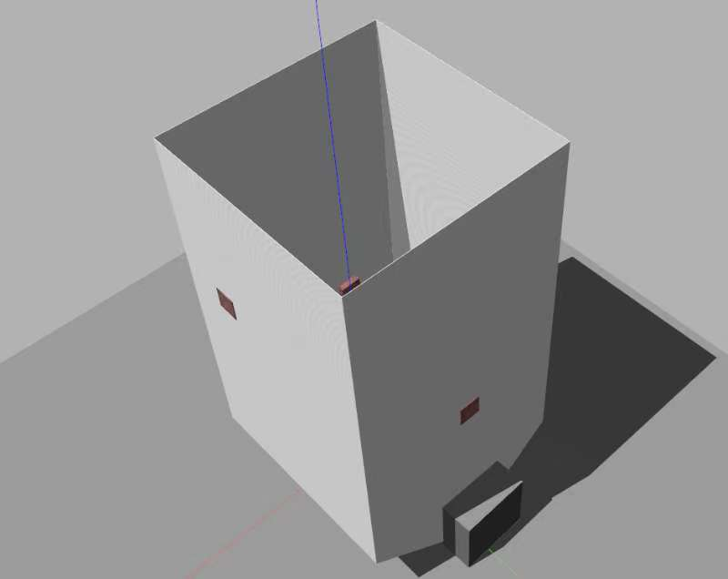
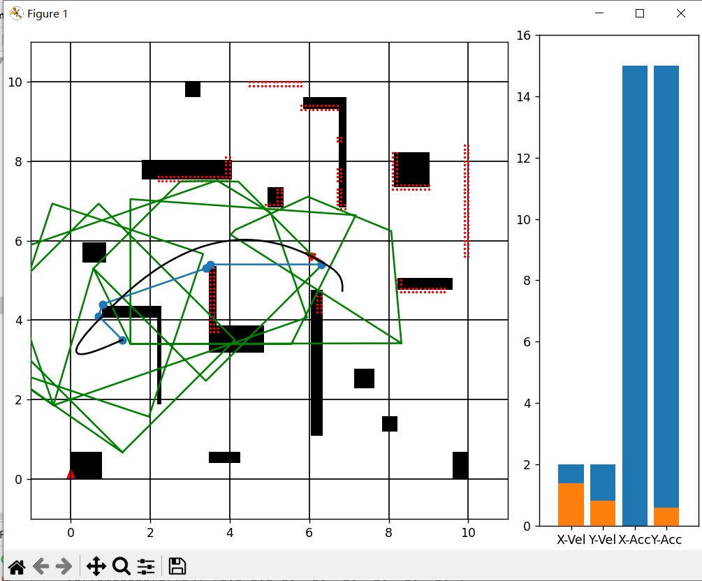
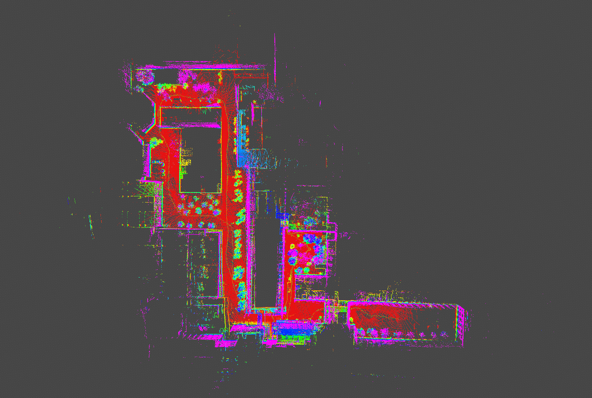
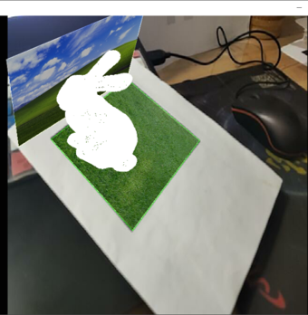
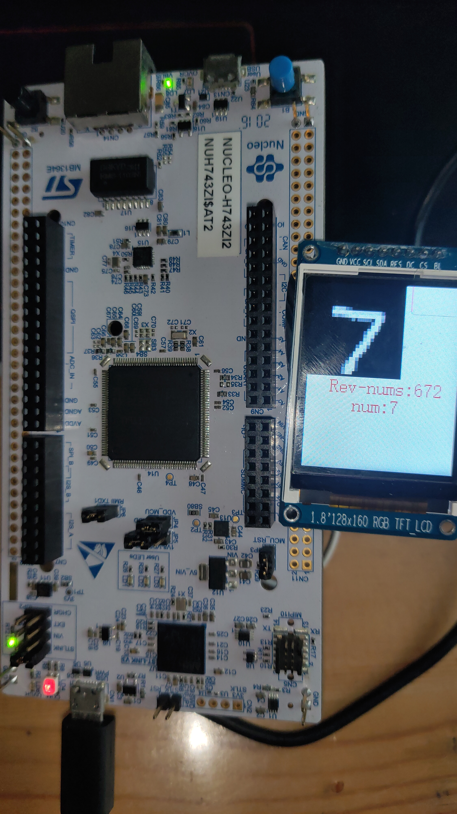
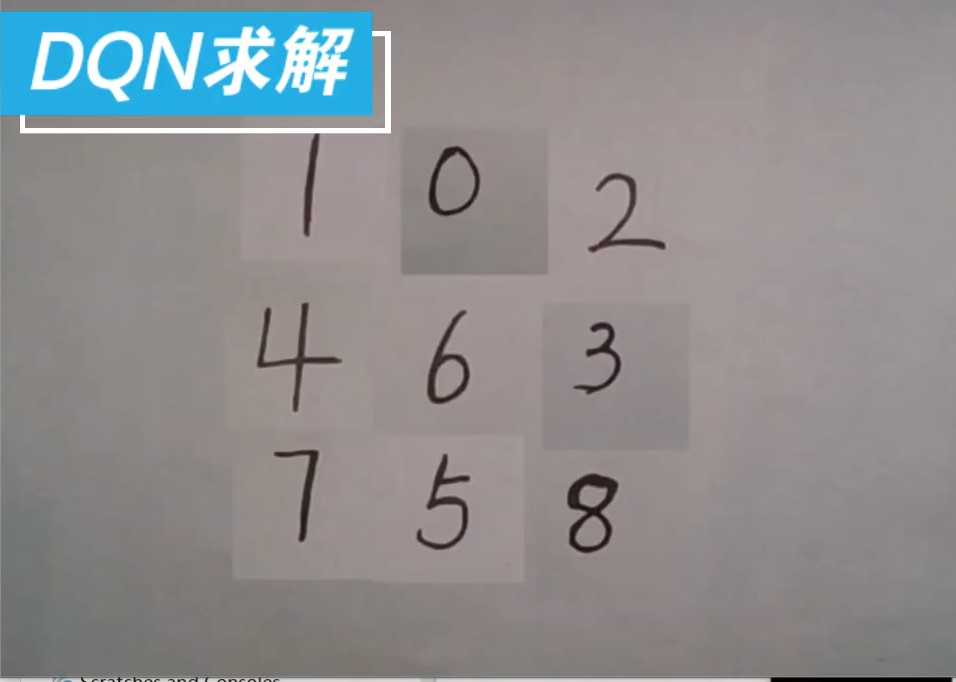
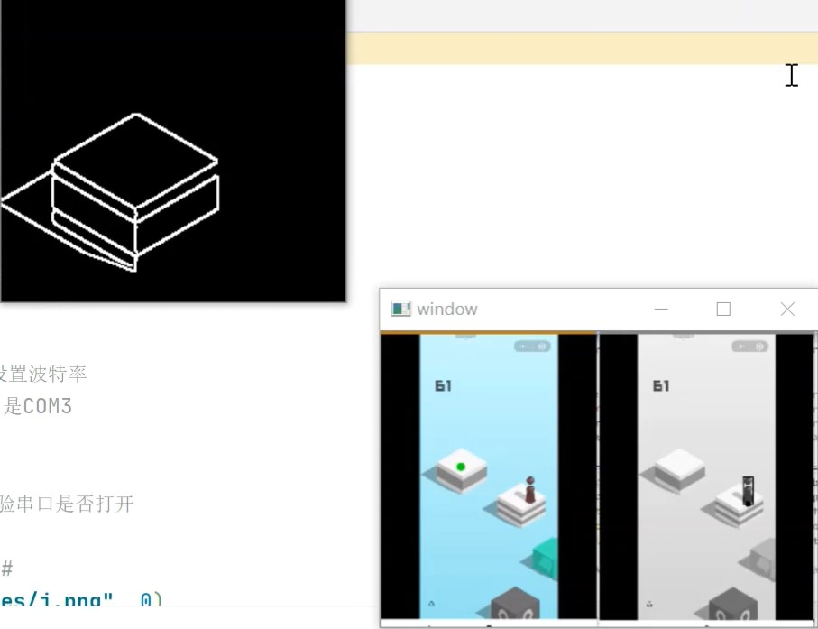
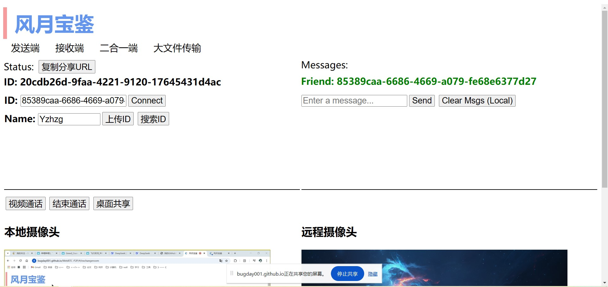

个人部分项目展示

二维激光SLAM
二维纯激光里程计，使用Ceres作为优化器，未使用点云处理库PCL。手写点云类，kd-tree和一个简单的帧间匹配算法。使用智能指针和Openmp等多种手段来优化代码。
GitHub链接

二维轨迹规划
基于开源项目实现了一个根据安全飞行走廊的轨迹规划器。使用分段多项式生成平滑且动态可行的轨迹，优化目标包括最小化轨迹的高阶导数。修改了原项目的错误，优化了代码逻辑，实现了传感器模拟与重规划逻辑。
GitHub链接

XIO_SLAM: 三维激光IMU紧耦合里程计
一个三维激光雷达IMU紧耦合里程计。基于DLO算法，添加IMU的预积分、点云去畸变和多传感器联合优化部分。使用图优化工具g2o实现了多传感器融合，输出最终的估计位姿。
GitHub链接


EdgeDigits: 嵌入式手写数字识别
基于STM32H7微控制器的手写数字识别项目，展示了在嵌入式设备上运行深度学习模型的能力。通过串口发送手写数字图片，STM32H7利用轻量级模型（TensorFlow Lite）进行实时推理并在LCD屏幕上显示图片与推理结果。
GitHub链接




YYYDS: 智能平衡单车
基于英飞凌双核MCU的平衡单车系统，使用RT-thread，实现多线程平衡控制和视觉巡线的功能。平衡线程使用卡尔曼滤波与串级PID进行车辆控制，调试线程通过SPI接口和fatfs库操作TF卡，可视化线程在屏幕显示电池电压和采集图像等消息，图像处理利用DMA中断和双核同步信号处理摄像头图像。
视频链接